الخدمات
نستلم المشروع كاملاً أو جزءاً منه: من الحفر والهيكل إلى التشطيبات الداخلية، ومعها التصميم وإدارة المشروع. لكل خدمة هنا أمثلة من مشاريعنا الفعلية.
التصميم والتنفيذ
إذا أراد العميل عقداً واحداً وفريقاً واحداً، نستلم المشروع من التصميم إلى التسليم: المخطط والتصميم الداخلي في قسم التصميم الخاص بنا، ثم التراخيص والإنشاء والتشطيبات.
بهذه الطريقة نفّذنا أقساماً في جمعيات تعاونية، وعيادات، ومطاعم، ودواوين.
- Hard Rock Café
مشروع متكامل2003 - Al-Quadisiya Cooperative Society
تصميم وتنفيذ داخلي2000 - Hadi Clinic, 3rd floor redevelopment
تصميم وتنفيذ داخلي2000 - Surra Cooperative 2, deli department
تصميم وتنفيذ داخلي2001 - Schlumberger head office renovation, Shuwaikh
تصميم وتنفيذ داخلي2002 - Senior Citizen Diwaniya, Rumaithiya Cooperative
مشروع متكامل، تصميم وتنفيذ2004
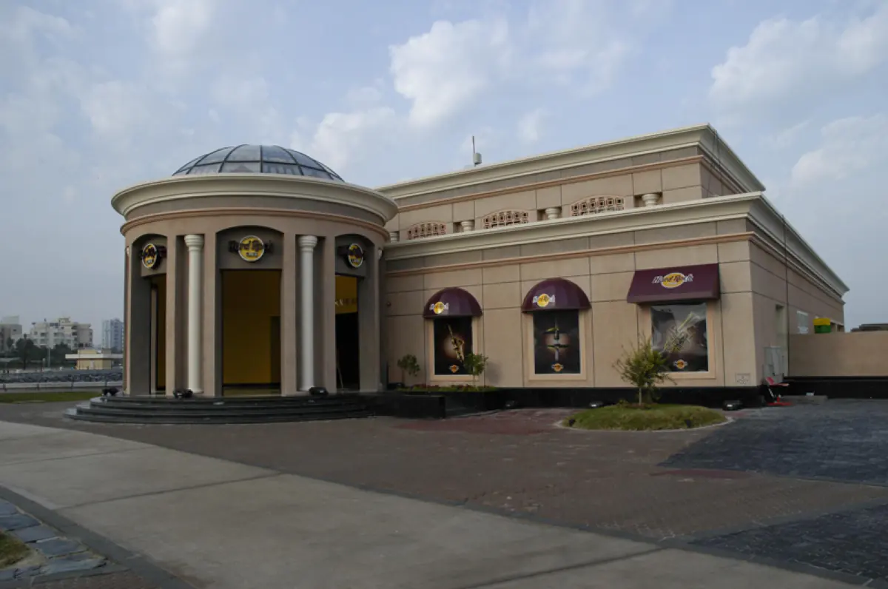
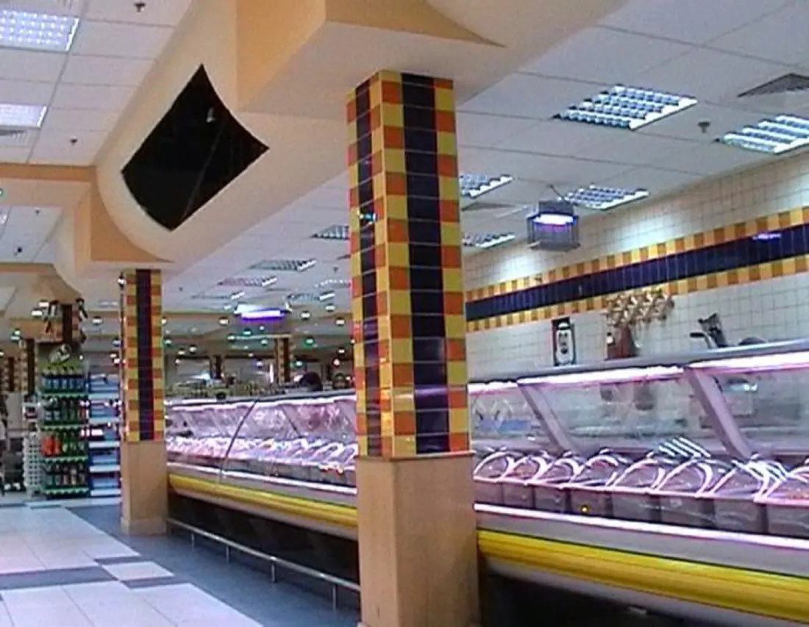
المقاولات العامة
مبانٍ متكاملة من الأساس. فروع البنوك جزء كبير من قائمتنا، لبنك الخليج والوطني والتجاري وبرقان وبوبيان والأهلي والأهلي المتحد وبنك الكويت والشرق الأوسط، إلى جانب المكاتب والعمارات السكنية والصالات ومواقف السيارات.
- Boubyan Bank, Ahmadi branch
مشروع متكامل2010 - Multi-storey car park, Rawda Cooperative
مشروع متكامل2008 - KGL Buildings I, II & III, Shuwaikh
مشروع متكامل2004 - Dashti Development, 32 apartments, Salmiya
مشروع متكامل2004 - Multi Purpose Hall, Hawally
مشروع متكامل2004 - Residential complex, Block 272, Plot 14, Salmiya
مشروع متكامل2006
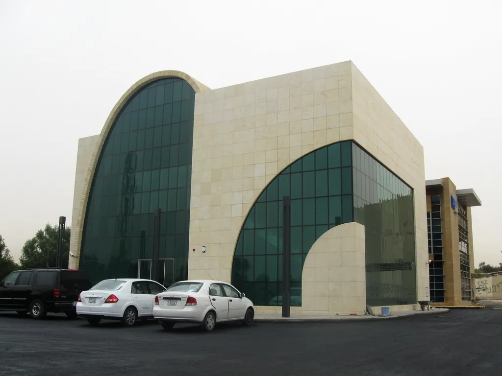
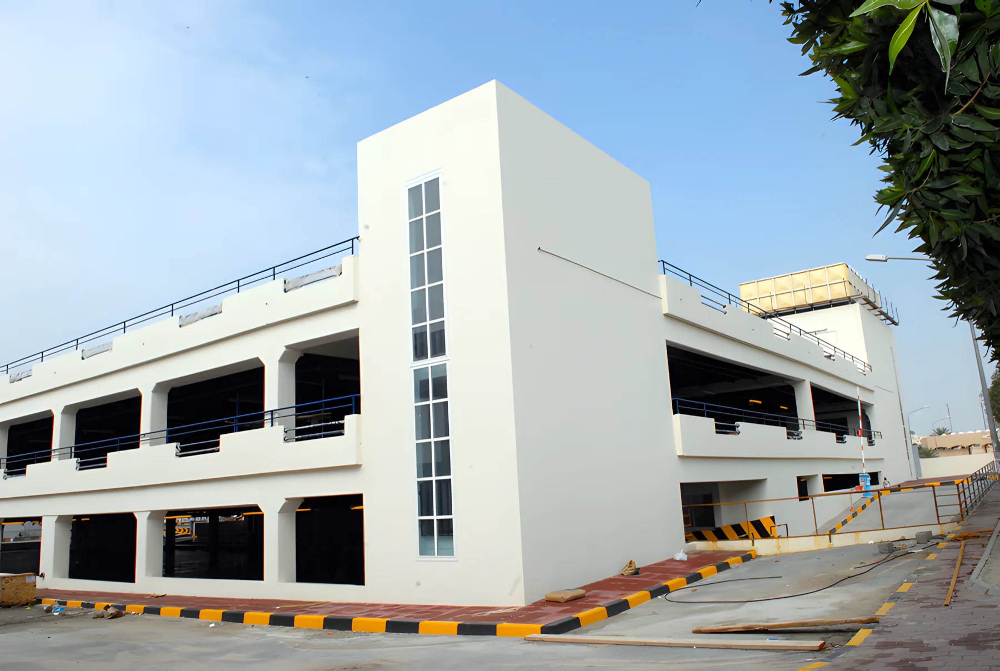
التشطيبات الداخلية
تشطيبات داخلية راقية للمحلات والمطاعم والعيادات والفنادق، بما فيها التشطيبات المعمارية والأعمال الكهروميكانيكية.
كثير من أعمالنا في المحلات والمطاعم كانت لعلامات شركة الشايع في مارينا مول والأفنيوز.
- IKEA, The Avenues
تشطيبات معمارية وأعمال كهروميكانيكية2006 - Debenhams, The Avenues
تشطيبات داخلية2006 - Magic Planet, The Avenues Phase II
تشطيبات داخلية2008 - International Hospital Complex, Salmiya
Internal finishes, package 62009 - ATP Medical Clinic, 6th floor, Jabriya
تشطيبات داخلية2011 - Safir International Hotel
New entrance and restaurants2001
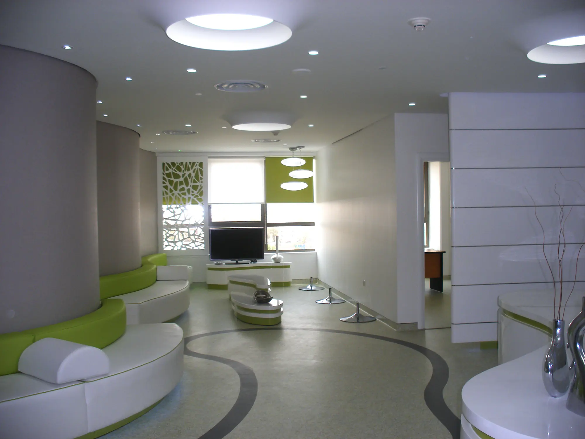
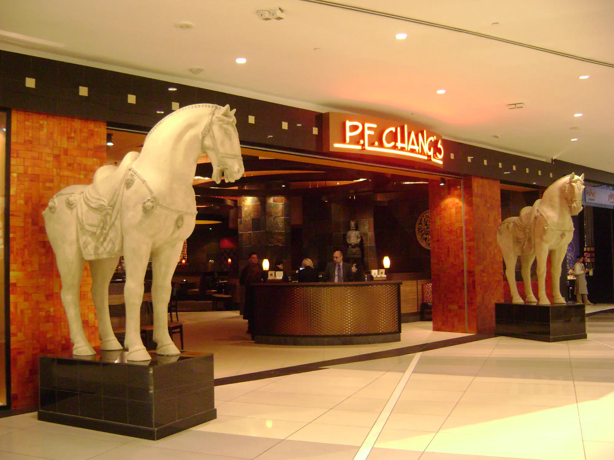
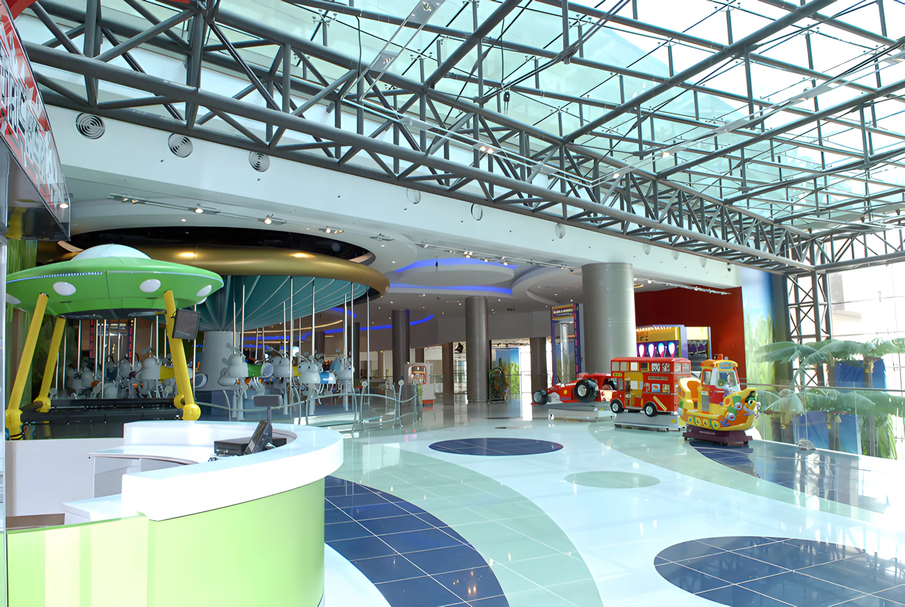
الهياكل الحديدية الثقيلة
هياكل حديدية للمخازن والمصانع والمعارض ومباني الترفيه، بما فيها أعمال الحديد مع التكسيات.
- Kuwait Tower Water Park
هيكل حديدي2002 - KGL Warehouses, Mina Abdullah
Heavy structural steel works2005 - KN New Development, Sulaibiya
أعمال حديد إنشائي2006 - Mercedes Showroom, Shuwaikh
أعمال حديد وتكسيات1999 - Drilco Machine Shop, Mina Abdullah
مشروع متكامل2003 - Sanam Glass Factory, Ma'an, Jordan
أعمال مدنية، تصميم وتنفيذ2009
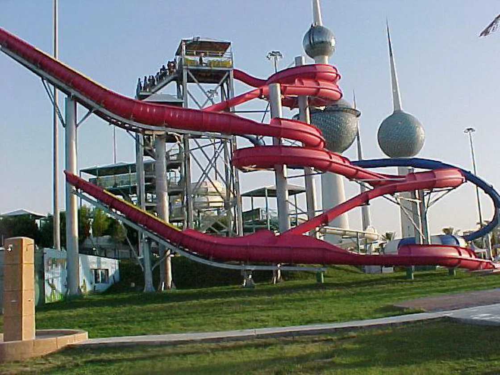
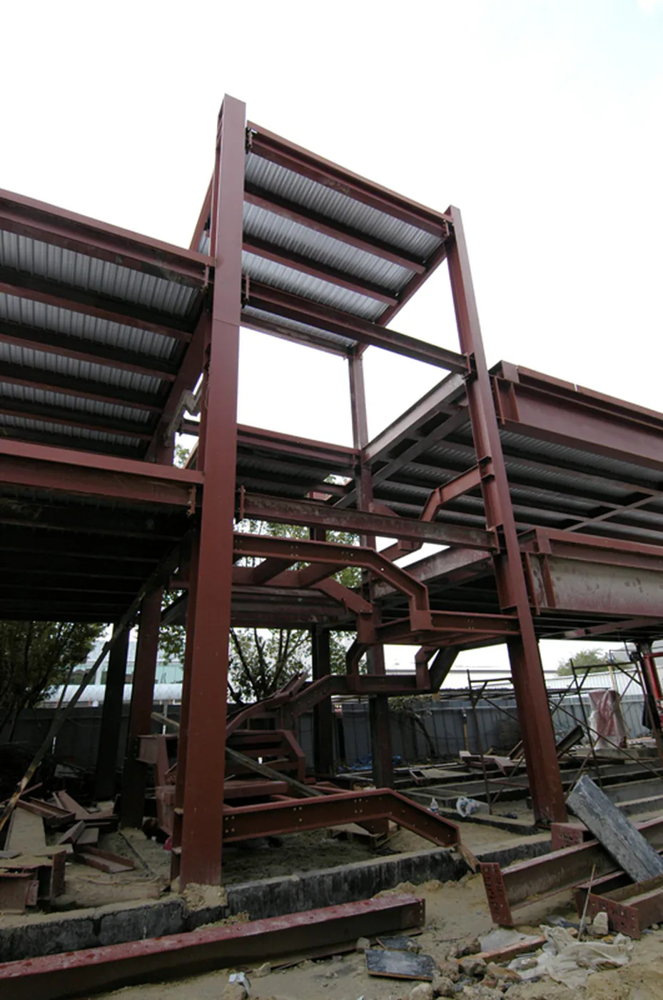
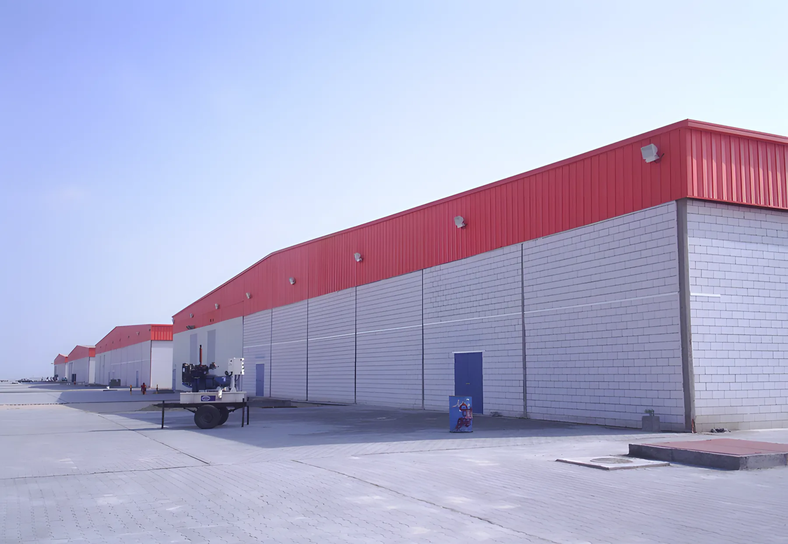
إدارة الإنشاءات والمشاريع
لدينا القدرة على التصميم والتنفيذ والتشغيل والإدارة لتسليم المشاريع على نظام تسليم المفتاح، ويدعمنا قسم التسعير لدينا.
ومن خلال cmbc-Kitchell International، التي تجمعنا مع شركة الإنشاءات الأمريكية Kitchell، نقدم إدارة الإنشاءات وإدارة البرامج الكاملة للمشاريع الحكومية والخاصة في الشرق الأوسط وشمال أفريقيا، ومقرها الإقليمي في الكويت.
خدمات cmbc-Kitchell International
- إدارة برامج التطوير
- إدارة المشاريع
- إدارة الإنشاءات
- الهندسة القيمية
- تحليل المطالبات وحل النزاعات
- خدمات هندسية ومعمارية أخرى
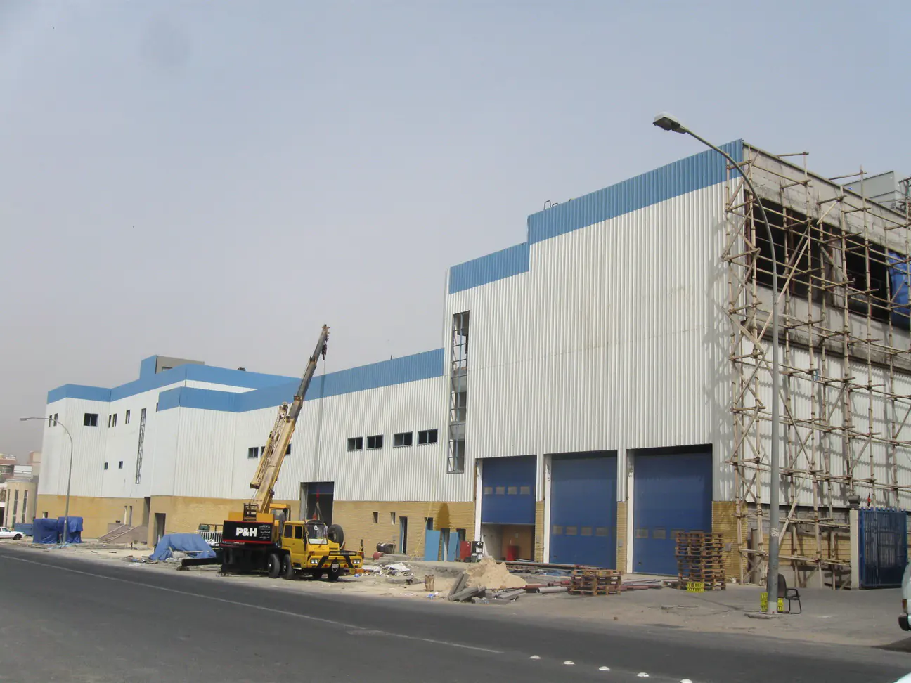
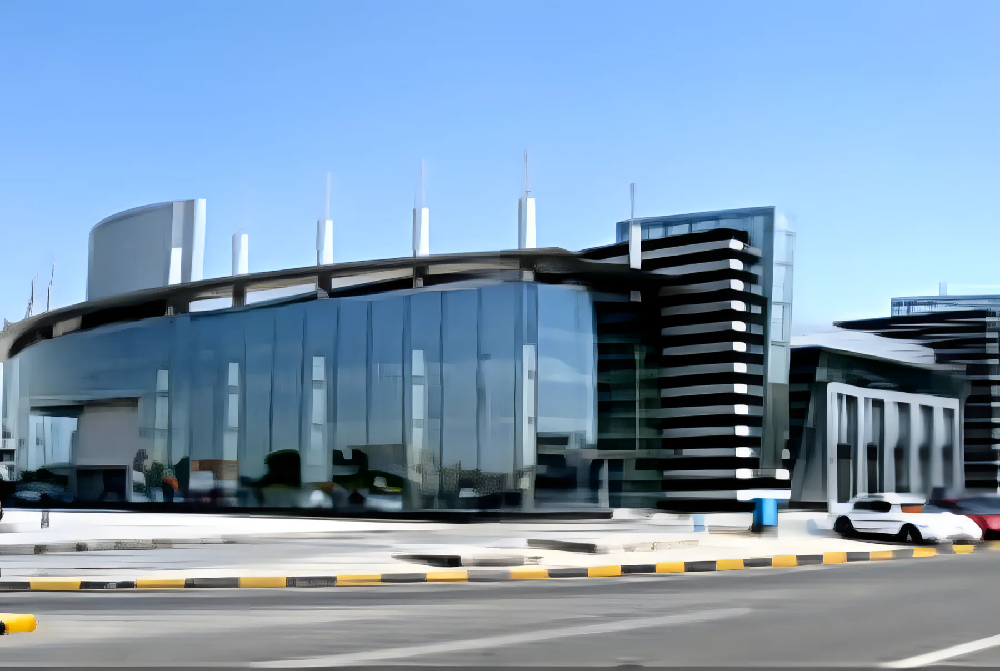
الحفريات والأعمال الترابية والبنية التحتية
حفريات وأعمال ترابية للسراديب والأساسات. وفي 2010 أطلقنا قسم الطرق والبنية التحتية.
- New headquarters, Aayan Leasing & Investment
حفريات وأعمال ترابية2007 - International Clinic, Mangaf
حفريات وأعمال ترابية2007 - Point Five, Water Front, Salmiya
حفريات وأعمال ترابية2009 - Piccadilly Restaurant Building, Salmiya
حفريات وأعمال ترابية2008 - Swimming Pool Complex, Sulaibikhat
حفريات وأعمال ترابية— - School playing fields
أعمال بنية تحتية—
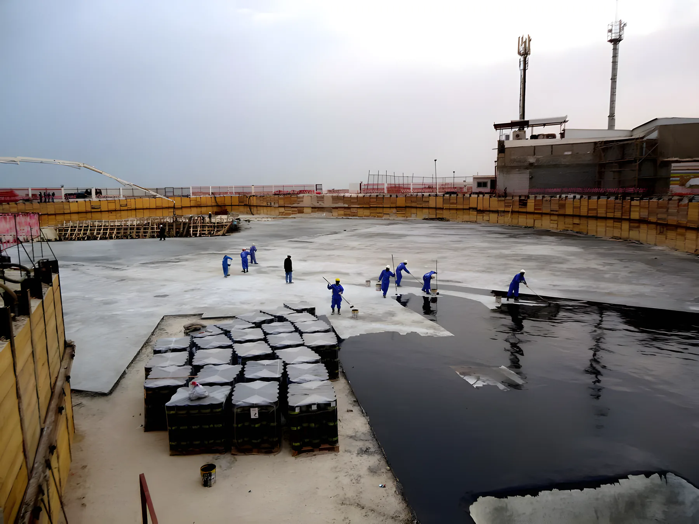
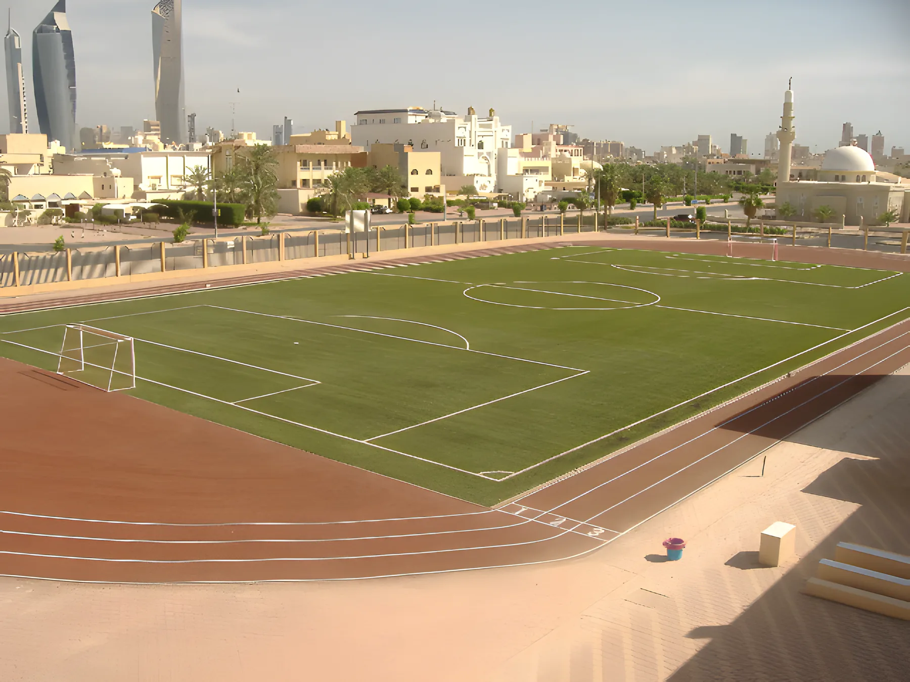